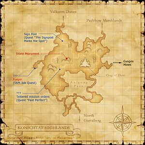

Description
Konschtat Highlands is an outdoor area in Zulkheim.
Map

Involved in Quests / Missions
| Quest / Mission | Type | Starter | Location |
|---|---|---|---|
| An Explorer's Footsteps | Map | Abelard | Selbina (G-9) |
| Forge Your Destiny | Job (SAM) | Jaucribaix | Norg (K-8) |
| Past Perfect | General | Evi | Port Bastok (H-6) |
| Silence of the Rams | General | Paujean | Port Bastok (F-6) |
| Sleepless Nights | General | Paouala | Southern San d'Oria (M-8) |
| The Signpost Marks the Spot | General | Nbu Latteh | Bastok Markets (J-9) |
NPCs
| Name | Location | Type |
|---|---|---|
| Plaiaude | J-6 | Chocobo Renter |
Notorious Monsters
| Name | Level | Drops | Steal | Family | Spawns | Notes |
|---|---|---|---|---|---|---|
| Bendigeit Vran | 14 | Rogetsurin | — |  ShadowsImage source ShadowsImage source | — | Spawns: 18:00~6:00 & New Moon; A, L |
| Ghillie Dhu | 30~ | Estramacon | — |  SaplingsImage source SaplingsImage source | — | — |
| Goblin Archaeologist | 30-75 | Arrowwood Lumber Broken Willow Rod Carnation Chocobo Feather Copper Ore Goblin Chocolate Goblin Helm Gold Beastcoin Moko Grass Rabbit Hide Rock Salt Rusty Bolt Case | — |  GoblinsImage source GoblinsImage source | — | A, L, S |
| Haty | 14 | Rogetsurin | — |  HoundsImage source HoundsImage source | — | Spawns: 17:00~5:00 & Full Moon; A, L, H, HP |
| Highlander Lizard | 27-28 | Immortal Molt | — |  LizardsImage source LizardsImage source | — | — |
| Rambunctious Rex | ??? | Chicken Knife II | — |  RamsImage source RamsImage source | — | — |
| Rampaging Ram | 27-28 | Ram Skin Ram Horn Rampaging Horn | Sheep Wool | RamsImage source | — | Lottery Spawn; A, S, Sc |
| Steelfleece Baldarich | 55-56 | Ram Skin Ram Horn Rampaging Horn Viking Shield | — | RamsImage source | — | Lottery Spawn; A, S |
| Stray Mary | 19-20 | Mary's Horn Mary's Milk Selbina Milk Sheepskin | — |  SheepImage source SheepImage source | — | Lottery Spawn; L, S, Sc |
Regular Monsters


Event Monsters
| Name | Level | Drops | Steal | Family | Spawns | Notes |
|---|---|---|---|---|---|---|
| Forger | 33 | Bomb Steel | — |  BombsImage source BombsImage source | — | Spawned Quest: Forge Your Destiny; A, S, M |
| Thunderhead | — | — | — | SheepImage source | 1 | Field Parchment; A, L, S, Sc |
Story walkthroughs in this area
| Story | Mission / quest |
|---|---|
| CoP 1-2 | Below the Arks |
| CoP 1-3 | The Mothercrystals |
References
External references describe their own server or retail rules. Documented Zenith changes take precedence.
Map credits: Map 1 — HorizonXI Wiki. Original game maps © SQUARE ENIX; redrawn maps retain the credited authorship and license.

Additional level-75 reference


These vast grasslands are situated just to the north of the Republic of Bastok. In contrast to the surrounding Bastok Mountains, the Konschtat Highlands are abundant with an array of alpine wildlife. Also, in order to harness the powerful winds called "Odin's Wrath" that constantly blow through the area, Bastok has constructed numerous windmills throughout the highlands. According to a treaty, San d'Oria provides a portion of their grain crops in exchange for the use of Bastok's windmills to produce flour.
Connecting Areas
- North Gustaberg at (I-12)
- Valkurm Dunes at (G-2)
- Hall of Transference, Dem via Shattered Telepoint at (I-7)
- Al'Taieu via Dimensional Portal at (I-7)
- Gusgen Mines at (L-7)
- Pashhow Marshlands at (K-3)
Alternate Arrival Methods
Involved in Quests/Missions
|
Quest |
Type |
Starter |
Location |
| An Explorer's Footsteps | Map | Abelard | Selbina (H-9) |
| Forge Your Destiny | Job (SAM) | Jaucribaix | Norg (K-8) |
| Past Perfect | General | Evi | Port Bastok (H-6) |
| Silence of the Rams | General | Paujean | Port Bastok (F-6) |
| Sleepless Nights | General | Paouala | Southern San d'Oria (M-8) |
| The Signpost Marks the Spot | General | Nbu Latteh | Bastok Markets (J-9) |
| Mission | Country | Starter | Location |
| Bastok Mission 2-1:The Crystal Line | Bastok | Bastok Gate Guard | Bastok |
| Bastok Mission 3-2:To the Forsaken Mines | Bastok | Bastok Gate Guard | Bastok |
Chocobo Digging
|
NPCs Found Here
Weather
| ||||||||||||||||||||||||||||||||||||||||||||||||||||||||||
Notorious Monsters Found Here
|
Name |
Level |
Drops |
Steal |
Family |
Spawns |
Notes | |||||||
| Bendigeit Vran | 14 - 14 |
|
Shadow | 18:00~6:00 New Moon | A, L | ||||||||
| Forger | 33 - 33 | Bomb | A, S, M | ||||||||||
| Goblin Archaeologist | 30 - 75 | Goblin | A, L, S | ||||||||||
| Haty | 14 |
|
Hound | 18:00~6:00 Full Moon | A, L, H, HP | ||||||||
| Rampaging Ram | 27 - 28 | Ram | A, S, Sc | ||||||||||
| Steelfleece Baldarich | 55 - 56 | Ram | A, S | ||||||||||
| Stray Mary | 19 - 20 | Sheep | L, S, Sc | ||||||||||
|
HP = Detects Low HP; M = Detects Magic; Sc = Follows by Scent; T(S) = True-sight; T(H) = True-hearing JA = Detects job abilities; WS = Detects weaponskills; Z(D) = Asleep in Daytime; Z(N) = Asleep at Nighttime | |||||||||||||
 |
Mobs Found Here
|
Name |
Level |
Drops |
Steal |
Family |
Spawns |
Notes | |||||||
| Amber Quadav | 8 - 10 | Quadav | |||||||||||
| Amethyst Quadav | 8 - 10 | Quadav | |||||||||||
| Earth Elemental | 18 - 20 | Elemental | |||||||||||
| Ghost | 15 - 17 | Ghost | |||||||||||
| Goblin Ambusher | 12 - 16 | Goblin | |||||||||||
| Goblin Butcher | 12 - 16 | Goblin | |||||||||||
| Goblin Digger | 11 - 14 | Goblin | |||||||||||
| Goblin Thug | 8 - 10 | Goblin | |||||||||||
| Goblin Tinkerer | 12 - 16 | Goblin | |||||||||||
| Goblin Weaver | 8 - 10 | Goblin | |||||||||||
| Greater Quadav | 10 - 16 | Quadav | |||||||||||
| Grenade (Monster) | 15 - 17 | Bomb |
Spawns During: Fog |
||||||||||
| Huge Wasp | 7 - 10 | Bee | |||||||||||
| Mad Sheep | 11 - 13 | Sheep | |||||||||||
| Mist Lizard | 10 - 12 | Lizard | |||||||||||
| Onyx Quadav | 10 - 16 | Quadav | |||||||||||
| Poltergeist | 18 - 20 | Evil Weapon | |||||||||||
| Rock Eater | 7 - 11 | Worm | |||||||||||
| Skeleton Sorcerer | 11 - 13 | Skeleton |
Spawns During: Night |
||||||||||
| Skeleton Warrior | 10 - 12 | Skeleton |
Spawns During: Night |
||||||||||
| Strolling Sapling | 7 - 10 | Sapling | |||||||||||
| Thunder Elemental | 18 - 20 | Elemental | |||||||||||
| Tremor Ram | 21 - 23 | Ram | |||||||||||
| Veteran Quadav | 10 - 16 | Quadav | |||||||||||
| Wolf Zombie | 8 - 10 | Hound |
Spawns During: Night |
||||||||||
| Young Quadav | 8 - 10 | Quadav | |||||||||||
|
HP = Detects Low HP; M = Detects Magic; Sc = Follows by Scent; T(S) = True-sight; T(H) = True-hearing JA = Detects job abilities; WS = Detects weaponskills; Z(D) = Asleep in Daytime; Z(N) = Asleep at Nighttime | |||||||||||||
Adapted from Eden Wiki: Konschtat Highlands · Contributors and history · CC BY-SA 4.0. Revision 46874. Layout, links and optional background text adapted for Zenith.